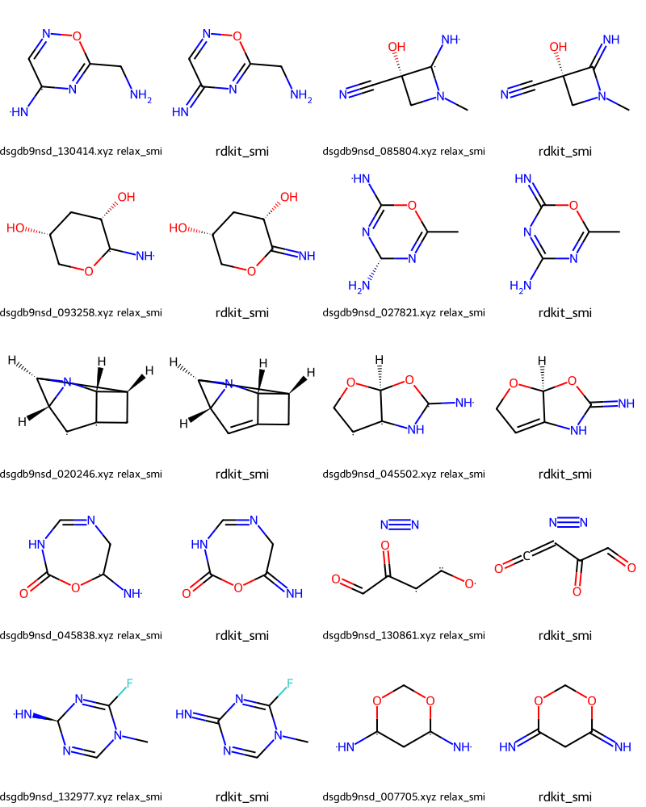
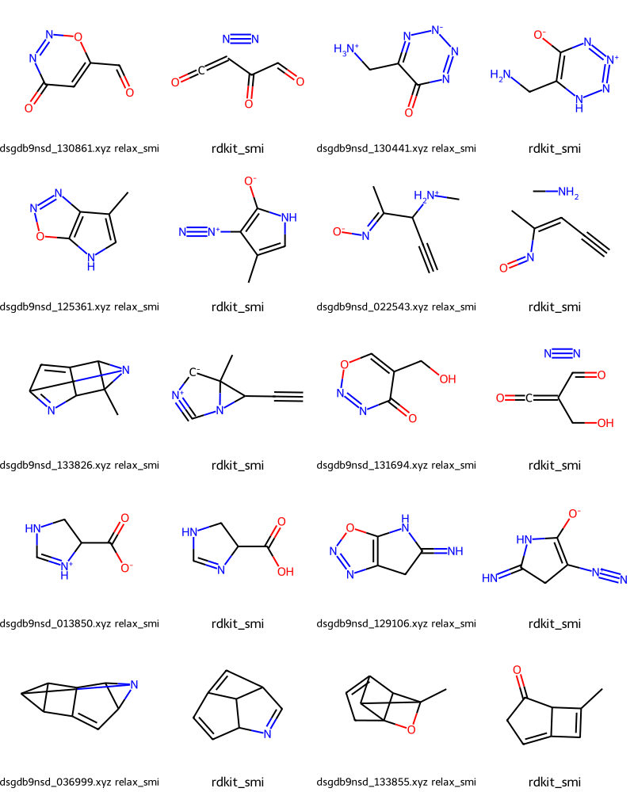

from rdkit import Chem
from rdkit.Chem import Draw
from rdkit.Chem.Draw import IPythonConsole
IPythonConsole.ipython_3d = True
import rdkit
rdkit.__version__'2022.09.1'December 18, 2022
One of the problems with using the results from quantum chemical calculations with the RDKit is that typical QM output formats just include atoms and their positions: since the calculations don’t need bond orders, they don’t show up in the output. The problem of assigning correct bond orders to the atoms in a molecule based solely on atomic positions (and the overall charge on the molecule) is a non-trivial one, and we’ve never had a good answer in the RDKit.
A few years ago Jan Jensen and his group published xyz2mol, an open-source, RDKit-based solution to this problem written in Python: https://github.com/jensengroup/xyz2mol. During this year’s Google Summer of Code, Sreya Gogineni, did a C++ port of the Python code and integrated it into the RDKit core for the 2022.09 release. Here’s the project description and here’s Sreya’s “final report” which is also the PR where we merged her changes into the RDKit core.
This post was originally just going to be a quick introduction to how to use that code. However, since I was having fun with it, I went ahead and did some testing on a bunch of 3D structures from QM9.
from rdkit import Chem
from rdkit.Chem import Draw
from rdkit.Chem.Draw import IPythonConsole
IPythonConsole.ipython_3d = True
import rdkit
rdkit.__version__'2022.09.1'To get some testing files, I downloaded some structures from the QM9 dataset. Here’s what those look like:
19
gdb 107313 2.67642 1.59305 1.14971 3.3443 81.12 -0.2359 -0.0506 0.1853 1106.1507 0.159794 -385.918216 -385.909962 -385.909018 -385.950934 31.892
C 0.0645055554 1.4843171326 0.3723315122 -0.379845
C -0.001915467 0.0516984051 -0.1729357038 -0.277772
C -1.4001624807 -0.5304376801 -0.1487075838 0.233551
C -1.9909553844 -1.0379429662 1.1601625215 -0.307513
C -1.7182271444 -1.9962888369 0.0152208454 -0.158294
C -2.905416575 -2.2627721735 -0.8489696604 -0.065615
C -3.3347497536 -1.1525477782 -1.4661914556 -0.191532
C -2.4353480328 -0.0114763902 -1.1388331005 0.336742
O -2.4853518918 1.1093228549 -1.595794586 -0.340877
H 1.0876615149 1.8699729825 0.3263064541 0.106173
H -0.5836533924 2.142053447 -0.2101812431 0.152698
H -0.2626541721 1.5210712578 1.4170099662 0.108877
H 0.3710335675 0.0343653078 -1.2041622283 0.107526
H 0.662791197 -0.6008609283 0.4071642198 0.091428
H -1.3142481944 -1.0584396879 2.0096409673 0.122076
H -3.0252533013 -0.8199288984 1.4038330438 0.125348
H -0.9412329872 -2.7436632889 0.1278385726 0.101319
H -3.37329736 -3.2394582332 -0.9072563749 0.118603
H -4.2004762777 -1.0463782959 -2.1061677066 0.117109
88.1998 132.6788 204.3282 214.9254 283.2151 320.8425 354.2003 451.4683 471.7609 631.475 661.0085 735.6532 750.9738 778.4916 839.8756 849.5692 876.8931 897.9162 967.6602 980.1789 992.0568 1026.4327 1049.1839 1072.0692 1075.099 1111.0662 1128.3577 1138.5104 1233.4573 1265.5356 1338.63 1352.428 1365.7919 1389.2764 1408.176 1477.5353 1487.9659 1495.4859 1514.6888 1630.2685 1799.8365 3021.0204 3038.158 3057.8354 3101.9102 3122.4464 3138.2864 3177.3129 3193.7776 3214.9261 3232.806
CCC12CC1C=CC2=O CC[C@]12C[C@H]1C=CC2=O
InChI=1S/C8H10O/c1-2-8-5-6(8)3-4-7(8)9/h3-4,6H,2,5H2,1H3 InChI=1S/C8H10O/c1-2-8-5-6(8)3-4-7(8)9/h3-4,6H,2,5H2,1H3/t6-,8+/m1/s1Sreya also added an XYZ file format parser to the RDKit, but these files include a bunch of additional information that we need to strip out. Here’s the code for that:
# the XYZ files from QM9 aren't really XYZ... clean them up:
def cleanup_qm9_xyz(fname):
ind = open(fname).readlines()
nAts = int(ind[0])
# There are two smiles in the data: the one from GDB and the one assigned from the
# 3D coordinates in the QM9 paper using OpenBabel (I think).
gdb_smi,relax_smi = ind[-2].split()[:2]
ind[1] = '\n'
ind = ind[:nAts+2]
for i in range(2,nAts+2):
l = ind[i]
l = l.split('\t')
l.pop(-1)
ind[i] = '\t'.join(l)+'\n'
ind = ''.join(ind)
return ind,gdb_smi,relax_smi19
C 0.0645055554 1.4843171326 0.3723315122
C -0.001915467 0.0516984051 -0.1729357038
C -1.4001624807 -0.5304376801 -0.1487075838
C -1.9909553844 -1.0379429662 1.1601625215
C -1.7182271444 -1.9962888369 0.0152208454
C -2.905416575 -2.2627721735 -0.8489696604
C -3.3347497536 -1.1525477782 -1.4661914556
C -2.4353480328 -0.0114763902 -1.1388331005
O -2.4853518918 1.1093228549 -1.595794586
H 1.0876615149 1.8699729825 0.3263064541
H -0.5836533924 2.142053447 -0.2101812431
H -0.2626541721 1.5210712578 1.4170099662
H 0.3710335675 0.0343653078 -1.2041622283
H 0.662791197 -0.6008609283 0.4071642198
H -1.3142481944 -1.0584396879 2.0096409673
H -3.0252533013 -0.8199288984 1.4038330438
H -0.9412329872 -2.7436632889 0.1278385726
H -3.37329736 -3.2394582332 -0.9072563749
H -4.2004762777 -1.0463782959 -2.1061677066
And now we can construct a molecule:
You appear to be running in JupyterLab (or JavaScript failed to load for some other reason). You need to install the 3dmol extension:
jupyter labextension install jupyterlab_3dmol
Of course that doesn’t yet have bonds. Let’s fix that.
Start with rdDetermineBonds.DetermineConnectivity(), this uses distances between atoms to determine where there should be bonds, but does not attempt to figure out bond orders.
from rdkit.Chem import rdDetermineBonds
conn_mol = Chem.Mol(raw_mol)
rdDetermineBonds.DetermineConnectivity(conn_mol)
draw_with_spheres(conn_mol)You appear to be running in JupyterLab (or JavaScript failed to load for some other reason). You need to install the 3dmol extension:
jupyter labextension install jupyterlab_3dmol
Now we can use rdDetermineBonds.DetermineBondOrders() to figure out what the bond orders should be.
This requires the overall charge on the molecule (the default value of the charge is zero, so it’s not technically necessary to provide it here, but we do so to be clear):
You appear to be running in JupyterLab (or JavaScript failed to load for some other reason). You need to install the 3dmol extension:
jupyter labextension install jupyterlab_3dmol
We can do both steps in a single call. This is the easiest way to use the code if you just want to look at the final bond orders:
conn_mol = Chem.Mol(raw_mol)
rdDetermineBonds.DetermineBonds(conn_mol,charge=0)
draw_with_spheres(conn_mol)You appear to be running in JupyterLab (or JavaScript failed to load for some other reason). You need to install the 3dmol extension:
jupyter labextension install jupyterlab_3dmol
See if the SMILES we got agrees with the what QM9 says it should be:
cm = Chem.RemoveHs(conn_mol)
osmi = Chem.MolToSmiles(cm)
smi = Chem.CanonSmiles(relax_smi)
print(osmi,smi)
osmi==smiCC[C@]12C[C@H]1C=CC2=O CC[C@]12C[C@H]1C=CC2=OTrueYep… that’s all good.
Let’s do another example:
ind,gdb_smi,relax_smi = cleanup_qm9_xyz('../data/dsgdb9nsd_127185.xyz')
raw_mol = Chem.MolFromXYZBlock(ind)
conn_mol = Chem.Mol(raw_mol)
rdDetermineBonds.DetermineBonds(conn_mol,charge=0)
conn_mol
draw_with_spheres(conn_mol)You appear to be running in JupyterLab (or JavaScript failed to load for some other reason). You need to install the 3dmol extension:
jupyter labextension install jupyterlab_3dmol
Again, make sure we got it right:
cm = Chem.RemoveHs(conn_mol)
osmi = Chem.MolToSmiles(cm)
smi = Chem.CanonSmiles(relax_smi)
print(osmi,smi)
osmi==smiCN(C=O)c1ccon1 CN(C=O)c1ccon1TrueSince this method needs the Hs to be there, it unfortunately won’t be useful in assigning bond orders to the ligands from PDB structures… ah well.
Here’s a little test to see how well the new functionality does on a randomly selected subset of QM9.
Start by getting 10K random files from my local copy of QM9 (these, for obvious reasons, aren’t in the gitub repo for this notebook) and preprocessing them:
I believe that QM9 doesn’t have double bond stereo indicated in the SMILES, verify that:
Here’s the testing code.
For each molecule we have two SMILES to compare to: 1. gdb_smi: the SMILES from GDB that the QM9 authors used as input 2. relax_smi: the SMILES generated by OpenBabel(?) from the optimized structure.
We’ll start by seeing if we match relax_smi and, if that fails, compare to gdb_smi.
from rdkit import RDLogger
RDLogger.DisableLog('rdApp.*')
relax_fails = []
gdb_fails = []
for fn,ind,gdb_smi,relax_smi in qm9_data:
# the RDKit can't parse some of the SMILES from QM9... skip those mols
try:
smi = Chem.CanonSmiles(relax_smi)
except:
continue
mol = Chem.MolFromXYZBlock(ind)
if mol is None:
print(f'Could not parse {fn}')
continue
rdDetermineBonds.DetermineBonds(mol,charge=0)
# remove double bond stereo:
for bond in mol.GetBonds():
if bond.GetBondType() == Chem.BondType.DOUBLE:
bond.SetStereo(Chem.BondStereo.STEREONONE)
elif bond.GetBondType() == Chem.BondType.SINGLE:
bond.SetBondDir(Chem.BondDir.NONE)
osmi = Chem.MolToSmiles(Chem.RemoveAllHs(mol))
# compare to relax_smi:
if smi!=osmi:
relax_fails.append((fn,smi,osmi))
# that failed, so next we are going to compare to gdb_smi;
try:
smi = Chem.CanonSmiles(gdb_smi)
except:
continue
# the GDB smiles don't have any stereo at all, so get rid of atomic stereo
for atom in mol.GetAtoms():
atom.SetChiralTag(Chem.ChiralType.CHI_UNSPECIFIED)
osmi = Chem.MolToSmiles(Chem.RemoveAllHs(mol))
if smi != osmi:
gdb_fails.append((fn,smi,osmi))
RDLogger.EnableLog('rdApp.*')
len(relax_fails),len(gdb_fails)Could not parse /local/QM9/dsgdb9nsd_112773.xyz
Could not parse /local/QM9/dsgdb9nsd_071817.xyz
Could not parse /local/QM9/dsgdb9nsd_024513.xyz
Could not parse /local/QM9/dsgdb9nsd_057755.xyz
Could not parse /local/QM9/dsgdb9nsd_005005.xyz
Could not parse /local/QM9/dsgdb9nsd_132540.xyz
Could not parse /local/QM9/dsgdb9nsd_002091.xyz
Could not parse /local/QM9/dsgdb9nsd_025366.xyz
Could not parse /local/QM9/dsgdb9nsd_104557.xyz(909, 27)Let’s start by looking at some of the failures based on relax_smi.
In the output we have pairs of molecules where the first is constructed from relax_smi and the second is what we perceived
import os
failmols = []
nms = []
for fn,ismi,osmi in relax_fails:
im = Chem.MolFromSmiles(ismi)
om = Chem.MolFromSmiles(osmi)
failmols.append(im)
failmols.append(om)
nms.append(f'{os.path.basename(fn)} relax_smi')
nms.append('rdkit_smi')
Draw.MolsToGridImage(failmols[:20],molsPerRow=4,legends=nms) 
Those seem to be cases where we’ve assigned a multiple bond while the SMILES in the publication has a single bond with radicals on either side.
What about some of the 27 cases where we haven’t reproduced the input GDB SMILES?
import os
failmols = []
nms = []
for fn,ismi,osmi in gdb_fails:
im = Chem.MolFromSmiles(ismi)
om = Chem.MolFromSmiles(osmi)
failmols.append(im)
failmols.append(om)
nms.append(f'{os.path.basename(fn)} relax_smi')
nms.append('rdkit_smi')
Draw.MolsToGridImage(failmols[:20],molsPerRow=4,legends=nms) 
Let’s look at a couple of those:
ind,gdb_smi,relax_smi = cleanup_qm9_xyz('/local/QM9/dsgdb9nsd_129106.xyz')
raw_mol = Chem.MolFromXYZBlock(ind)
conn_mol = Chem.Mol(raw_mol)
rdDetermineBonds.DetermineBonds(conn_mol,charge=0)
conn_mol
draw_with_spheres(conn_mol)You appear to be running in JupyterLab (or JavaScript failed to load for some other reason). You need to install the 3dmol extension:
jupyter labextension install jupyterlab_3dmol
ind,gdb_smi,relax_smi = cleanup_qm9_xyz('/local/QM9/dsgdb9nsd_133855.xyz')
raw_mol = Chem.MolFromXYZBlock(ind)
conn_mol = Chem.Mol(raw_mol)
rdDetermineBonds.DetermineBonds(conn_mol,charge=0)
conn_mol
draw_with_spheres(conn_mol)You appear to be running in JupyterLab (or JavaScript failed to load for some other reason). You need to install the 3dmol extension:
jupyter labextension install jupyterlab_3dmol
Those are clearly cases where the QM optimization has yielded a completely different structure from what they started with.
I’m sure we’ll end up finding (and fixing) issues once more people start using the code, but I think these results show that the new functionality in rdDetermineBonds works quite well!
The last question I had, and I will definitely stop after this, is how long it takes to run the code. Let’s check that.
I just want to time DetermineBonds() part, so let’s construct the molecules in advance:
from rdkit import rdBase
with rdBase.BlockLogs():
tmols = []
for fn,ind,gdb_smi,relax_smi in qm9_data:
# the RDKit can't parse some of the SMILES from QM9... skip those
mol = Chem.MolFromXYZBlock(ind)
if mol is None:
continue
tmols.append(mol)
len(tmols)9991646 ms ± 2.95 ms per loop (mean ± std. dev. of 7 runs, 1 loop each)We can do almost 10K molecules in 646 ms, that’s about 65 μs per molecule. So running DetermineBonds() shouldn’t be a bottleneck in any workflows. :-)